An Introduction
Thursday, August 13, 2009
Pretty much everyone knows that the tech industry is rife with competition. Particularly between rival
companies
that make the same damn thing (think Coke vs. Pepsi).
When it comes to computer tech hardware, video graphics
cards
are a heated competition. ATI and nVidia are locked in a constant battle for hardware supremacy to have
the
highest
framerates, biggest resolutions, the most onboard memory, and sharpest 3D graphics in the world. Winner
gets
the
bragging rights that come along with it (for a few minutes, anyway, until the competition takes the lead
again.)
This site isn't about any of that.
Beneath the nVidia vs. ATI competition is another competition. A more basic
competition which requires no technical knowledge whatsoever.
I am speaking, of course, of the epically ridiculous artwork which decorates virtually all graphics card
display boxes.
It is my intention to dedicate this little space
on the blog-o-blag to the categorical study of the quest to have the
most
fire-breathing 3D dragons riding monster trucks while doing battle with scantilly clad warrior women per
square
inch.
Science!
Thursday, August 13, 2009
I'm a scientist, and as such I'm faced with the difficult problem of applying objective values on
something
as amorphous as art. In order to effectively compare video card box art, I will first establish some
criteria through which I can give a quantifiable score to any given example.
A general survey of my colleagues has resulted in the creation of the following scorecard (see below),
which
will be applied to every piece of artwork. One point will be awarded for every instance of every
category
example present.
The Scorecard
- Any use of wireframe
- Robots (1pt each)
- Spheres (1pt each)
- Cubes (1pt each)
- Ficticious Monster (1pt each, 2pt for a dragon)
- Predatory Animal (real animals)
- 3D renderings of women or parts of women (eyes, legs, boobs, elbows, etc.)
- Weapons (1pt each)
- Armor (1pt per person/being that's wearing any amount of armor)
- Vehicle implying speed (racecar, jet, etc.)
- Vehicle implying power (monster truck, bomber plane, etc.)
- Fire
- Lightning
- Ice
- Water
- Clouds
- Wizard
- Energy bursts (1pt each)
- Spikeballs (1 pt each)
- Number of times the letter X is used _____
ATI Radeon HD4850
Thursday, August 13, 2009
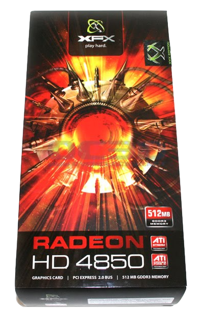
I'm not really sure what the artist was going for here... Is that some sort of space morning star?
Perhaps
some
kinda space version of a water mine? The übergoth cousin of HAL from 2001? Whatever it is, it looks like
getting
near it would result in horrible explosions or lasery red death. Though it also looks like it'd be fun
to
ride
around inside it.
Let's tally this one up:
+1 Spikeball
+1 Energy burst
+1 Weapon (I'm giving the benefit of the doubt that it's not a friendly evil glowing red space spike
ball
mine)
+2 uses of the letter X (I'm not going to count the X in "PCI Express")
Grand total: 5
Not bad, but I'm sure we can do better. C'mon ATI!
Asus ENGTX275
Thursday, August 13, 2009
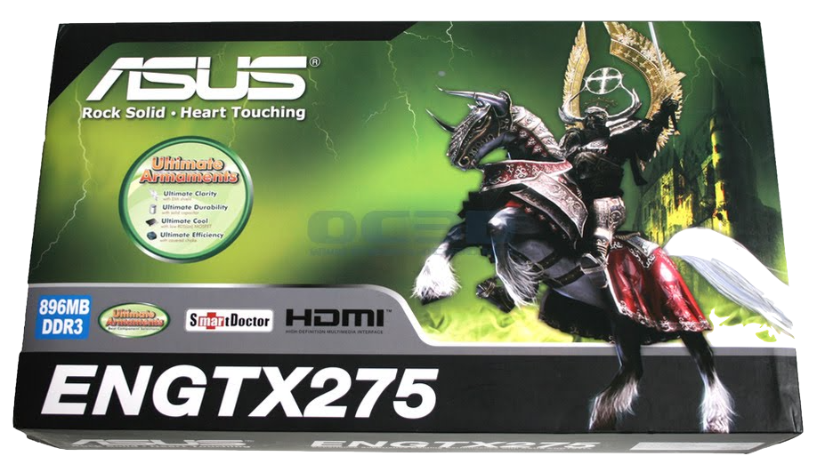
Asus is not normally a name one thinks of when you hear the term "video card", but the great thing about
video cards is just about every computer hardware manufacturer out there has branded at least one or two
graphics cards in their day, which means we won't have to limit ourselves to ATI and nVidia! hoorj~!
The artwork on this one is pretty badass. I mean it's basically a D&D artists reworking of Skeletor...
with
perky cross-laden golden angel wings. Perhaps he's decided to join the crusades in the holy land?
Enough about Skeletor. Let's turn our attention now to two very fascinating points on this box. I'm
talking
of course of the words Heart and Touching. They're arranged right next
to
one another rather prominently right under the massive Asus logo, which implies that they're intended to
be
read together like a statement. "Heart Touching" -- y'know, like children's books about bunnies who
sneak
into Farmer MacGregor's carrot patch, or stories of how a child will donate their kidney to save a dying
sibling.
OK, WHAT THE FLAHGGHAWEGAH!??!?!
Sorry Asus, there's nothing less heart touching than a piece of computer hardware. Depictions of weapon
wielding
skeletal warriors don't back up your claims. Heart Touching FAIL.
Let's rate this guy:
+2 Armor (the horse is wearing some too, afterall)
+1 Weapon
+1 Lightning
+1 Fictitious Monster
+1 Clouds (I guess that green glowing stuff is a cloud? maybe it's the aurora borealis?)
+1 letter X
The horse is giving me a bit of a dilemma. It's not a predatory animal, despite it's badass horn
helmet and
it's
being used as a vehicle, essentially, which makes me wanna give it at least +1 for the "vehicle
implying
power"
category... but I'm not in a giving mood after that whole "Heart Touching" fiasco.
Final Score: 7
Not bad, Asus, but seriously, get a new tag-line.
Zogis GeForce 9400
Thursday, August 13, 2009
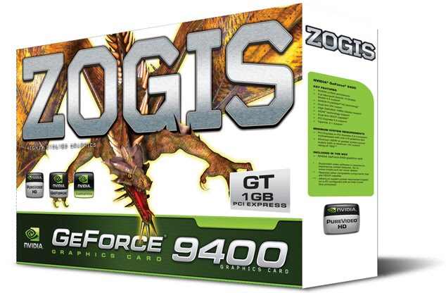
Oh ZOGIS, how do I love thee? Other graphics card boxes may change their content, they may opt for a
sexy girl
in a metal bikini, or a cyborg amphibian, but not you ZOGIS. You have found a formula for getting a
solid score
of "2" every time.
Dragons. Every single box. Not always the same dragon of course, that would be lame. Nope, different
dragons for
different cards, but that's it. No werewolf. No wizard. No castle. No maiden in distress. Just dragons.
Sometimes they swoop down upon some unsuspecting prey just below the edge of the box (look out Linksys
WRT54G
Router!)
Sometimes they charge right out of the box towards you, that reptilian eye fixed upon you. Gleaming
teeth and
claws poised for ripping you apart. "Buy me and cram me in your home computer or I'll rip your fucking
lungs
out! BREEEEAAAAAWK!" Yeah!
I could probably dedicate an entire sub-blog solely to ZOGIS dragons, but I won't. We'll just stick with
this
guy for now.
Let's see... he's orangey, hes' swooping down, he's um... got some sorta feathery lookin' action going
on in the
back there... he likes long walks on the beach, the History category of Trivial Pursuit, and he's
allergic to
peanuts. We'll name him Raul.
The scoring breakdown:
+2 for a Dragon
Final Score: 2
BFG NVIDIA GeForce 260 GTX OC MAXCORE 55
Friday, September 4, 2009
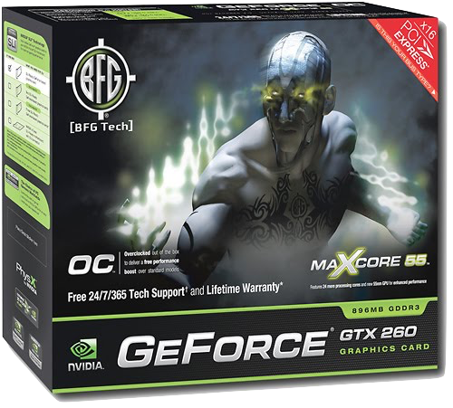
When some people think of really really baddass videogame elements to put on a box that will really
inspire
consumers and move units, they think of Emo Superheros. Enrique, the male model above, is the go-to
industry guy
for GeForce whenever they need a wizard or superhero with tribal tattoos and poorly proportioned hands.
Enrique is all business on the set. Cameras roll and he immediately begins crying his trademark Shiny
Magnetic
Tears into his tiny, tiny hands - all while looking completely inconsoleable. He's a total Pro.
Given his tribal tat and shredded delts I'm about ready to confirm the rumor that Enrique started his
carrer in
the film House-Boat Studs #7 - not that I would watch that but I heard it from somebody don't judge me
you are
reading about fantasty art on computer hardware boxes.
As far as giving this card a place in the pantheon of Video Card Box art - there were some tough calls
to be
made. I, for one, am extremely partial to shiny tears and I think they are pretty badass. He also has a
kickass
helmet with a secure looking chinstrap to ensure that it never comes off in combat or while headbanging
to
"Fallout Boy." A lot of hard work went into rendering those biceps, and I'm currently pushing the
Video-Game
Box-Art Judging Association to add "rad biceps" to the scoring card. But, for now, here are the results:
+1 Armor (helmet)
+1 Lightning /Water (lightning tears!)
+2 for energy bursts
+1 Clouds
+1 GeForce GTX +1 maXcore 55- has an X and stands for THE MAXIMUM CORE POWER which is clearly 55
OVERALL SCORE: 7
Where this Card really stands out is in it's X-ecution (yep). We're talking so many X's I thought I was
watching
Sex In the City reruns (yep again).
Although tied with the Asus Baddass D&D Skeletor Knight Warrior of Total Badness, this piece is a
mediocre work
salvaged only by excessive energy usage and X inflation. I predict not a crowd favorite.
ATI Radeon X800XL
Saturday, September 5, 2009
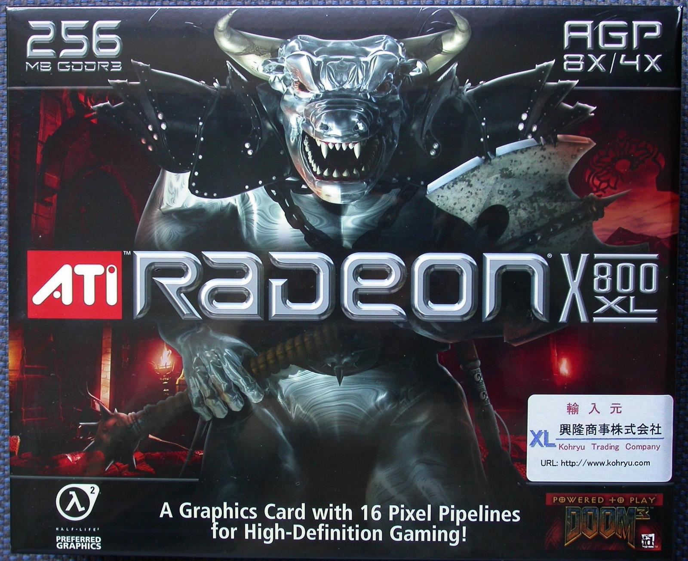
Wow. The crazy bovine-phobia the artist behind this box suffers from is practically off the scale.
Now, I know some of you reading this are gonna say "no, that's just a minotaur." -- and to address that,
I've
created this short play starring me, as myself, and you as the whiny mythology nerd.
ACT I
Me: Holy shit, look at that crazy vampire cow dude!
You: That's just a minotaur.
Me: Minnow what? Shut up or I'll sic a crazy vampire cow warrior on you.
You: You have no idea what a minotaur is.
Me: You're a minotaur! I'll minotaur you! Your mom's a minotaur!
You: I'm done talking to you now.
Me: Yeah, you better run Señor Minotaur!
You: Your vocabulary is nothing short of amazing.
Me: OH NOES!! A GAZEBO!
[At this point a large and angry gazebo crashes on to the stage and eats your stack of D&D character
sheets,
your GURPS manual, and your bag of 20 sided dice.]
You: Gazebos don't eat! They're a (often octagonal) pavilion structure found in gardens and parks!
[I laugh as the gazebo sits on
you and makes
you take it back.]
END SCENE
Whatever nightmarish cow-related experiences the designer of this box suffered from as a child were
probably
pretty horrific. And hilarious, cuz I mean, c'mon... crazy axe wielding vampire cow? HA!
He looks like he's dressed up for a GWAR concert. In fact, I'm pretty
sure
that's just the guitar player.
Let's score this baby. I have a good feeling about this one.
+1 Ficticious monster
+1 Predatory animal
+1 Weapon
+1 Armor
+2 Fire (torches)
+1 Clouds (there's some evil red lookin' weather out there)
+1 Spikeball (the end of the axe sure looks like a spikeball to me)
and 1, 2, 3, 4... 5! Five uses of the letter X! (Not counting the 'x' in Pixel).
Which gives us a kickass score of 12!
FINAL SCORE: 12
Well done ATI! Your artistic livestock nightmare vision has paid off. I'm sure this baby is flying off
the
shelves at this very moment.
Radeon 9800XT Pro
Wednesday, September 9, 2009
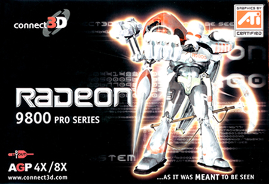
This guy multi-tasks hard. Like, so frickin hard. Your "ALT+D,F, F" Excel shortcut is like nothing to
him! He
spits on your Outlook 'Ctrl+Shift+M' and your regular 'Windows Key + M'. Uhhh, Alt-Tab? Who the efff are
you
thinking you can even mention Alt-Tab around this guy? Come.....On....Alt-Tab. Can you even conceive of
looking
so hard while simultaneously crunching all of those numbers in the background?? His built-in vicious
accounting
stamp and huge Fist/Pen are just waiting to put a fat X on your W-2.
He's kind of like Inspector Gadget in that regard - but, like, imagine if Inspector Gadget had slain the
Archangels Gabriel and Tyriel in the Chrono-Ether, eons before the time of mankind - indeed - before the
genesis
of time itself and stolen their very Halos and forged from them an exo-suit of Indestructible
Destruction and
Amortization of Unused Assets.
Oh man. That art is intense. It took me 43 hours to write this post because I spent the first 42 of
those hours
cowering under my desk. Every time I peek out around my cube a MASSIVE steel fist seemingly appears from
nowhere
and threatens to smash my face in!
Ahhhhhhhh my beautiful face! Gahhh! Oh. Shit. There isn't a huge deadly Pen/Fist flying at me! Its just
this
epic Robotic Angel of Death on this box art. Whew. The only way to successfully write this post was to
keep the
blogpost-typing window (that's blog-tech nerd for a window where you type your blog post) scrolled way
down so
that I don't catch any glimpses of this terribly realistic assault.
Let's do the score quick because I'm about to have a breakdown:
+1 Robot
+1 Fictitious Monster (hes obviously more than just a robot!)
+1 Armor
+3 Weapons (Scyth, Spike Pen, Stamp of Death)
+1 Energy Burst (Shoulder lamps and gleams)
+1 Clouds
+3 X's
Total: 11
What??? This doesn't defeat that lame Minotaur Ruben?? I'm petitioning the board.
I really wanted to give points for the Matrix-Style numbers floating around everywhere, but I'm the
Anton Scalia of
video card box art - letter of the law, not intent. You might say "but couldn't they be interpreted as
'wireframe' or 'energy'"??? Yeah, and the right to privacy is the right to abortion you baby killer.
PNY GeForce 9400GT
Monday, January 18, 2010
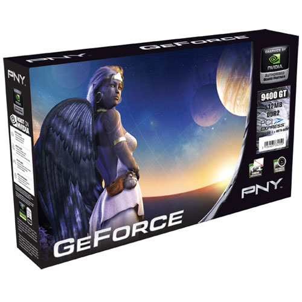
The PNY GeForce 9400GT. The "softer side" of the video card industry. Not a weapon or fanged beasty in
sight!
Unless of course that's a vampire-level-9-elf-angel-space-alien-princess-healer-mage. Can't tell, since
her
mouth is shut in that Mona Lisa smile. She needs a good fantasy name. Harnessing the power of the
web-o-tubes, I
have generated a name for her. Henceforth, she shall be Jajaqa of Fairlight!
I think it's safe to say that the binary planet action going on in the background there would likely rip
apart
any stable orbit system. Jajaqa might wanna think about evacuating whatever rock she's standing on. She
looks
like the sorta gal with easy access to a spaceship. Maybe one powered by some hawt steampunk olde tyme
lookin'
propellers and some sort of blimp/zeppelin things. Yeah. One thing's for sure, she's lookin' mighty
lonely
there. No other life in sight. Not even shrubs. Hey Jajaqa, get some freakin' house plants!
PNY is clearly hoping that lonely gamer dudes will be overcome with the need to keep Jajaqa company on
that
desolate rock. What better way to do that than through the purchase of a video card?
Let's rate this box, shall we? I have a feeling this isn't going to do so well...
+1 wireframe -- There's some sorta wireframe thing up in the sky there. Perhaps holding the sky
up?
+2 spheres -- I count two planets. For those of you arguing to include Jajaqa's breasts, get your
own blog.
+1 fictitious "monster" -- she's not particularly monsterish, but she has wings. It'll hafta do.
+1 rendering of a woman
+1 weapon -- is that thing on her belt a flask or a grenade? We'll give her the benefit of the doubt
and say that on Fairlight they drink explosives.
+1 Energy burst -- ok, it's probably just the sunrise, but whatev.
+1 Clouds -- they're faint, but they're in there.
... and a shocking disuse of the letter X! NONE AT ALL. Shame on you PNY.
Total: 8
I'd say that's a very generous 8 too. Jajaqa is never gonna make it in this biz unless she ups her game.
MSI XPOWER II (or: Cheating At Life)
Wednesday, January 4, 2012
I'm going to go the extra mile and include not just one, but THREE face melting images to burn into your
retinas, all thanks to the artistic masters at MSI.
Feast your eyes on these babies.
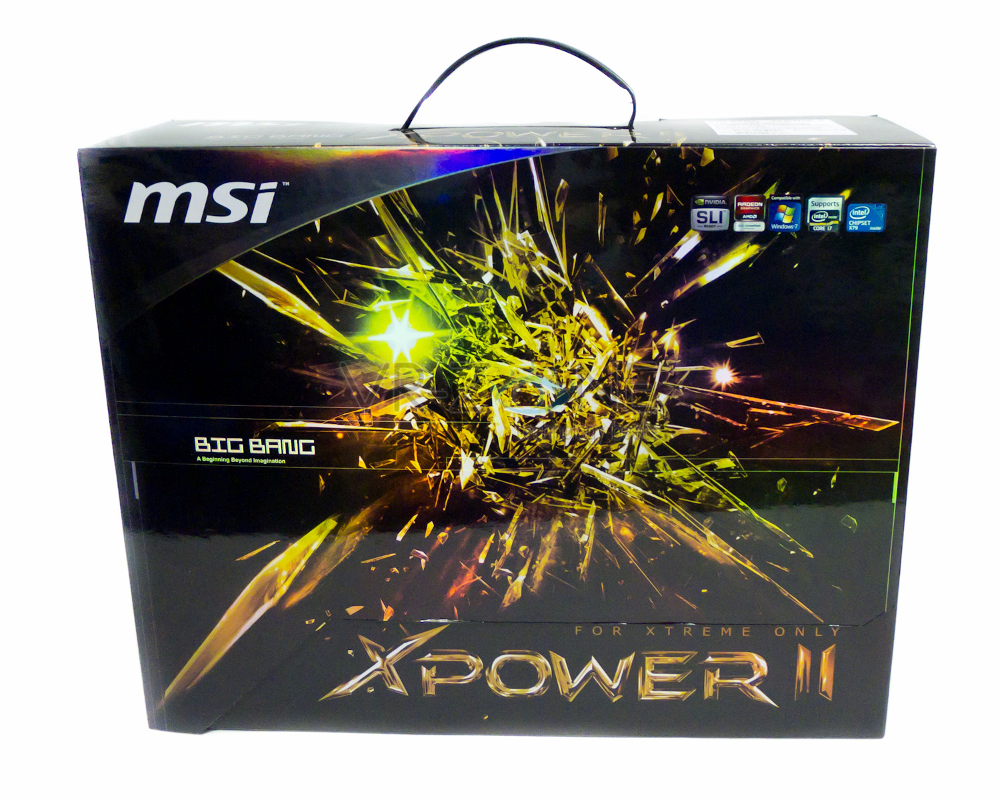
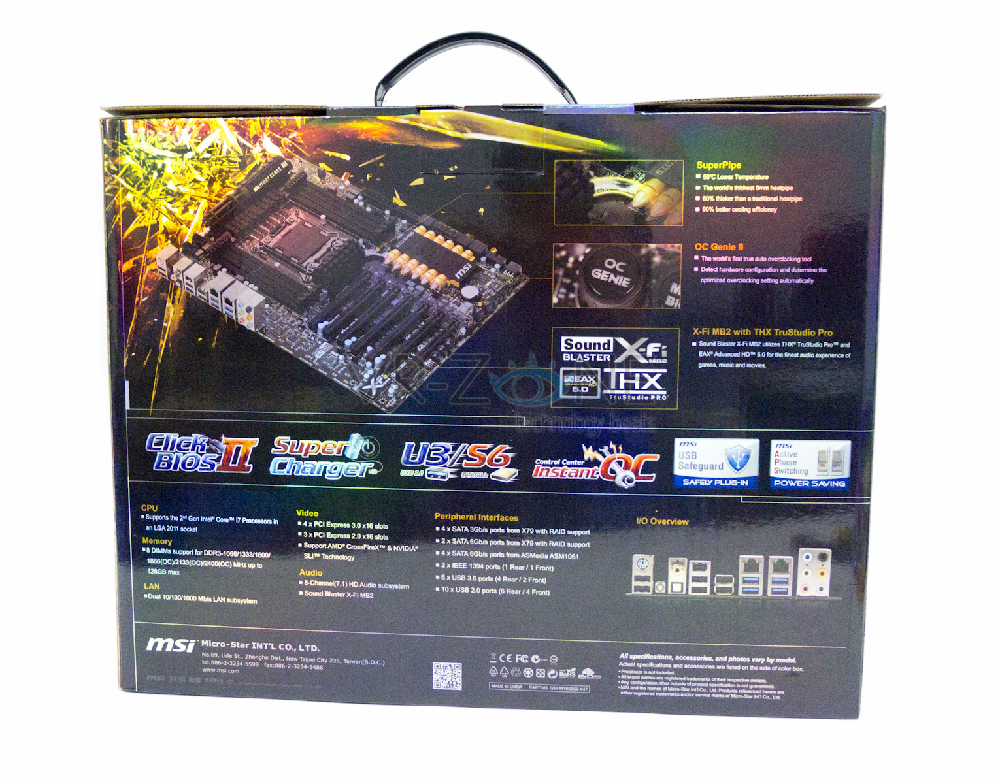
First and foremost, you're probably saying "but, that's not a video card!" And you'd be right. I'm an
adult.
I'm willing to admit when I'm at fault. That is not a video card. It's a motherboard. It doesn't even
have some
crappy built-in video card which I can pretend exempts me from the rules of this blog. Whatever.
You might then say to yourself "I refuse to pay attention to any more of this charade until you show me
a goddamn video card box!"And that's entirely within your purview, go back to moderating Wikipedia.
For those of you who are cool with judging motherboard box art for a moment, let's check this baby out.
The theme of this box is clearly that of shattering all expectations. You expected some sort of crystal
orb? HA! We smash your crystals to pieces! Shards in yo' face, fool!
How much power does this motherboard have anyway? X! That's how much! but that's not all, it's got that
bitchin' II after it! Which makes me wonder if this is X to the power of II? or is it merely a Roman XII
with "power" crammed in the middle? or perhaps it's X multiplied by II to give us XX? Hard to say. Only
MSI can tell us for certain.
If you'll direct your attention to the back side of the box, you'll want to take notice of the feature
just right of the "Super Pipe". Notice anything unusual? Of course you did. There are SIX GOLDEN BULLETS
strapped to this motherboard. Clint Eastwood would use this motherboard to take out punks on his front
lawn, that's how badass MSI engineers are. Don't fuck with MSI engineers.
Let's check out the scorecard for this thing.
+ 1 point for ice (or whatever that shattering material is)
+ 2 points for energy bursts (one big one, one small one)
+ 1 point for spikeballs (maybe? I dunno, it seems kinda spikey and ball-esque)
+ 1 point for fire (there's some reddish firey glow in there, we'll count it)
+ 2 points for X's, though if it's X to the power of 2, then who knows how many points this really
is.
+ 6 points for bullets. BULLETS. ON A MOTHERBOARD!
Total: 12
BONUS CONTENT
Assuming you're willing to concede the motherboard oversight, you may also be willing to stretch your
mind a little further and check out this other gem of badassery from MSI.
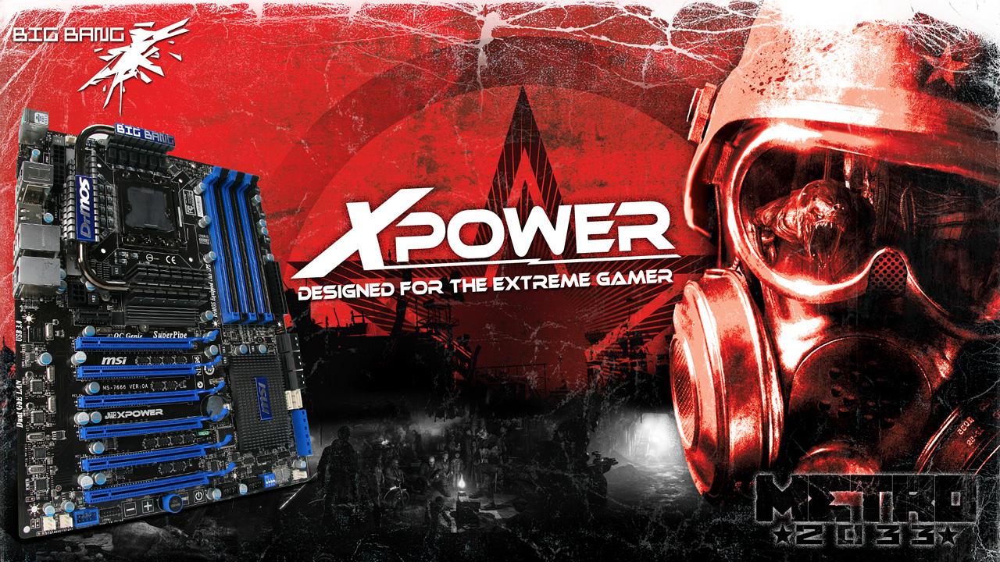
HO LEE SHAZBOT. Seriously. Click that image to see this badboy in all it's glory. The details and
minutiae are staggering.
Mock stress marks on the edges? Check.
Mock communist propaganda? Check.
Random year in the future mentioned? Check.
Monster? Check.
Futuristic armored warrior? Check.
Fire? Check.
Gun? Check.
Crowd of rebellious looking refugees? Check.
Bullets on the mobo? FAIL.
It's no XPOWER II, but that artwork still bears some study. Glad to see they opted for the inclusion of
bullets in the newer model. Any predictions for what features the XPOWER III will hold?
iOS App: Dark Summoner by Ateam Inc.
Friday, May 15, 2015
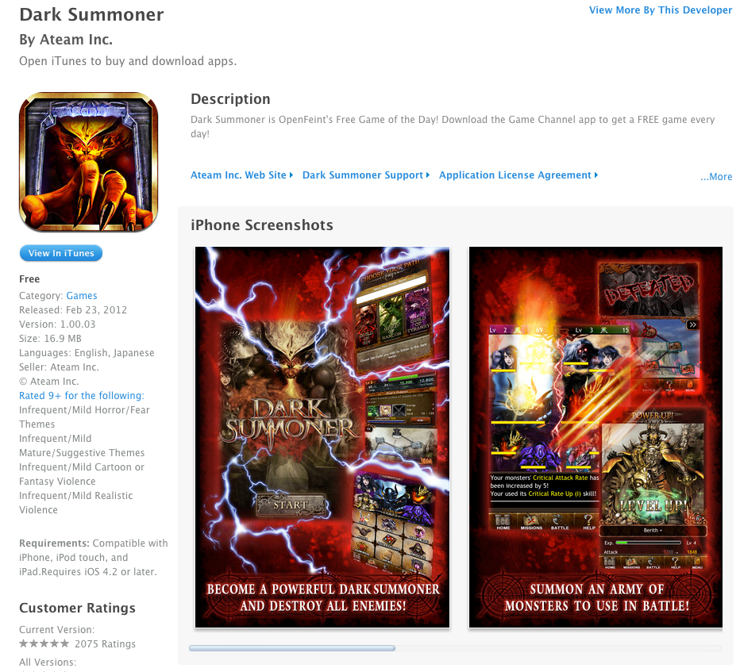
Once again I'm bending my own rules because for some reason or other the VIDEO CARD BOX ART INDUSTRY has
collapsed. (Perhaps it's based in some country with an unstable economy?) There's really a general lack
of
worthwhile box art coming out these days.
Luckily, I was pointed to this fantastic bit of work! (I know, it's not a video card, whatev.)
So, picture this:
You're out on a date. You're at a malt shop. You're happily chatting it up with your date, sipping your
oreo
snickerdoodle caramel mocha malt. You pop a few fries in your mouth. Your phone vibrates. You
reflexively
reach into your pocket and pull it out to see who's calling...
AND A GIANT RED SATAN CLAW HAND REACHES OUT OF YOUR PHONE AND INTO YOUR SOUL, REPLACING IT WITH SEARING
HOT
LIGHTNING DEATH.
Or at least that's what I assume this app does. Maybe it's a game. I dunno, I didn't read the details
that
closely, as I was busy fearing for my soul.
Let's rate this thing as best we can... Perhaps I'll have to make a new scorecard for app artwork?
GUYS!!!! Let's total this thing up! I have a feeling this is going to set a new precedent!
+8 for Fictitious Monsters (they're EVERYWHERE!)
+2 for Energy Bursts (I only see 2? It's hard to tell what with all the fire and lightning)
+15 for Armor (Honestly, I lost count of how many characters are in this image, but let's assume
they're all
coated in enchanted Adamantium Mithril Helms)
+1 for Lightning
+1 for Fire
+3 for Weapons (I see a sword IN THE LOGO OF THE GAME. How badass is that??)
+3 for Wizards (Those girls are wizards right? Or is that the same girl 3 times?)
+1 for whatever you wanna call that glowing blurry claw mark thing
Total: 34 — A NEW RECORD!!!
Perhaps all of the video card box art artists have gone the way of the App?